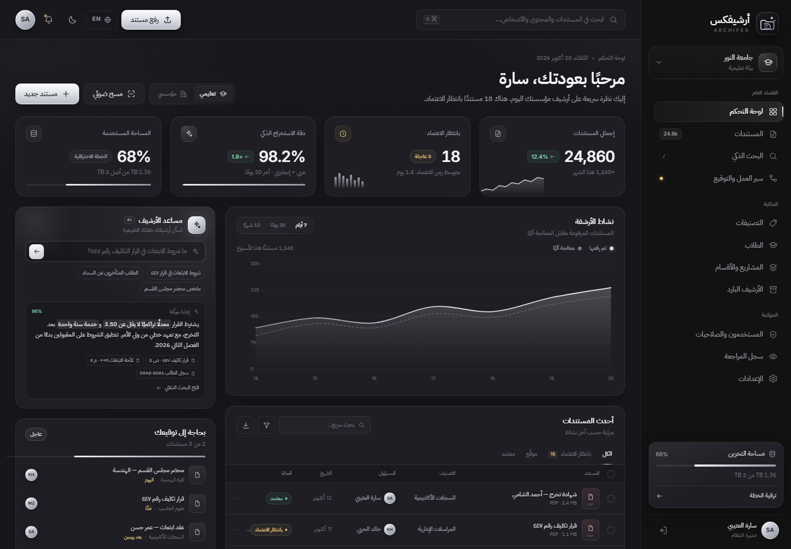

OCR عربي + إنجليزي
نص قابل للبحث من الممسوح والصور، مع الحفاظ على التنسيق الأصلي وثنائية اللغة في المستند الواحد.
أرشيفكس يحوّل ملايين المستندات إلى معرفة قابلة للبحث والاعتماد. OCR عربي وإنجليزي، استخراج ذكي للبيانات، وحوكمة كاملة — من أول مسح ضوئي إلى آخر توقيع.

تعليم يفرض خصوصية سجلات الطلاب وربط الهوية الأكاديمية. وشركات تفرض ربط العقد بالعميل والمشروع والامتثال. أرشيفكس يفهم الفرق، ويوحّد التجربة.
سجلات أكاديمية، شهادات، كشوف درجات، خطابات تكليف، وتعاميم — مرتبطة بالكلية والقسم والبرنامج، مع صلاحيات تمنع الاطلاع غير المصرّح.
عقود واتفاقيات، فواتير وملفات ضريبية، مواصفات مشاريع، SLAs وRFPs — مرتبطة بالعميل والمشروع والقسم، مع سير عمل للاعتماد والتوقيع.
ليست مساحة تخزين. أرشيفكس يفهم المستند، يستخرج بياناته، يربطه بسياقه، ويحميه بصلاحيات وسجل تدقيق — ثم يجعله قابلاً للبحث في لحظة.
نص قابل للبحث من الممسوح والصور، مع الحفاظ على التنسيق الأصلي وثنائية اللغة في المستند الواحد.
حقول وبيانات وصفية مع نسبة ثقة وإحداثيات، وقواعد واضحة للمراجعة البشرية عند انخفاض الثقة.
بحث لغوي ودلالي في النص والميتاداتا والأشخاص، مع تصفية دقيقة بالقسم والتاريخ والنوع.
أدوار على مستوى المؤسسة والقسم والمستند، وعزل متعدد المستأجرين عبر RLS في قاعدة البيانات.
سجل append-only بسلسلة تجزئة لكل عملية، جاهز للمراجعة الداخلية والامتثال والتحقيق.
اعتماد متعدد المراحل، توقيع رقمي، إشعارات وتصعيد تلقائي عند التأخر — دون بريد متفرق.
سياسات احتفاظ، تعليق قانوني، وأرشفة باردة بتكلفة منخفضة مع استرجاع مضمون.
واجهة RTL/LTR كاملة، ومحتوى عربي وإنجليزي في المستند نفسه، دون ترجمة تفقد المعنى.
خط أنابيب واحد يتعامل مع الرفع، OCR، الاستخراج، التصنيف، المراجعة، التوقيع، والأرشفة — مع حالة واضحة لكل مستند.
سحب وإفلات، ماسح ضوئي، بريد إلكتروني، أو API. المستند يدخل الطابور فوراً.
OCR عربي وإنجليزي، استخراج حقول وبيانات وصفية، وتصنيف تلقائي حسب النوع والقسم.
مراجعة بشرية للحقول منخفضة الثقة، سير عمل متعدد المراحل، وتوقيع رقمي موثّق.
بحث فوري في المحتوى والميتاداتا، سياسات احتفاظ، وسجل تدقيق لكل خطوة.
صُمم أرشيفكس للمؤسسات التي لا تحتمل فقدان مستند أو تجاوز صلاحية. العزل، التشفير، التدقيق، والاحتفاظ — جزء من التصميم من اليوم الأول.
* خارطة الامتثال قيد التنفيذ — هذه معايير تصميم وليست شهادات صادرة.
Modular Monolith واضح الحدود، قاعدة بيانات واحدة مع RLS، وطوابير معالجة مستقلة. وعند الحاجة، OpenSearch وخدمات منفصلة — دون إعادة كتابة.
اقرأ وثيقة المعماريةنطاق MVP محدد: 6 أنواع مستندات، 3 عملاء تجريبيين، وفريق من 10 أشخاص. كل مرحلة لها بوابة قبول واضحة.
ورش مع العملاء، نماذج أولية، عقود البيانات، واختيار المزوّدين.
الرفع، OCR، البحث، الصلاحيات، وسجل التدقيق الأساسي.
الاستخراج الذكي، سير العمل، التوقيع، الاحتفاظ، وتقارير الامتثال.
3 عملاء، اختبار أداء وأمن، تدريب، وقياس NPS والاعتماد.
حزمة تصميم قابلة للتنفيذ: معمارية، مخطط قاعدة بيانات، نظام هوية وواجهة، وخارطة MVP — مع نموذج تفاعلي حقيقي.
المكوّنات، خط أنابيب OCR/AI، البحث، التعدد المستأجر، الأمان، النشر، والمراقبة.
36 جدولاً، ERD، قيود، RLS، فهارس عربية، احتفاظ، ترحيل ونسخ احتياطي.
التسمية، الشعار، الألوان، الطباعة، المخططات السلكية، المكونات، وRTL والوصول.
المراحل، الفريق، الميزانية، التسعير، مؤشرات النجاح، خطة التجربة، والمخاطر.
سجّل الدخول أو أنشئ حساباً تجريبياً، ثم افتح المنصة وبدّل اللغة والقطاع والثيم وجرّب البحث والرفع ومعاينة المستند.
عرض تصميمي · لا يحتاج تسجيل · جميع البيانات وهمية